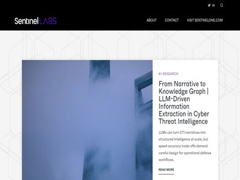
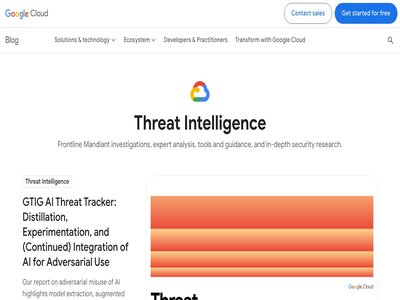
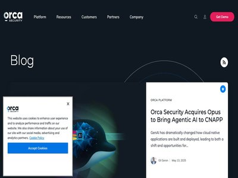
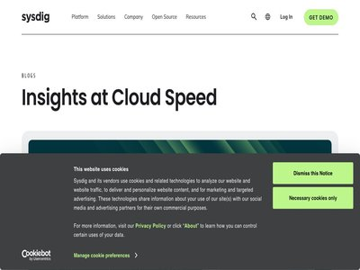

Oracle fixes critical RCE flaw CVE-2026-21992 in Identity Manager
March 22, 2026
Oracle fixed a critical severity flaw, tracked as CVE-2026-21992, enabling unauthenticated remote code execution in Identity Manager. Oracle released security updates to address... (Security Affairs)
U.S. CISA adds Apple, Laravel Livewire and Craft CMS flaws to its Known Exploited Vulnerabilities catalog
March 22, 2026
U.S. Cybersecurity and Infrastructure Security Agency (CISA) adds Apple, Laravel Livewire and Craft CMS flaws to its Known Exploited Vulnerabilities catalog. The U.S. Cybersecur... (Security Affairs)

VoidStealer malware steals Chrome master key via debugger trick
March 22, 2026
An information stealer called VoidStealer uses a new approach to bypass Chrome's Application-Bound Encryption (ABE) and extract the master key for decrypting sensitive data stor... (BleepingComputer)

Week in review: ScreenConnect servers open to attack, exploited Microsoft SharePoint flaw
March 22, 2026
Here’s an overview of some of last week’s most interesting news, articles, interviews and videos: What smart factories keep getting wrong about cybersecurity In this Help Net Se... (Help Net Security)
WorldLeaks ransomware group breached the City of Los Angels
March 21, 2026
WorldLeaks group hit Los Angeles and its Metro system, forcing a shutdown, while two Bay Area cities declared emergencies after ransomware attacks. WorldLeaks group hit Los Ange... (Security Affairs)
Trivy vulnerability scanner breach pushed infostealer via GitHub Actions
March 21, 2026
The Trivy vulnerability scanner was compromised in a supply-chain attack by threat actors known as TeamPCP, which distributed credential-stealing malware through official releas... (BleepingComputer)

Critical Quest KACE Vulnerability Potentially Exploited in Attacks
March 21, 2026
The vulnerability is tracked as CVE-2025-32975 and it may have been exploited in attacks against the education sector. The post Critical Quest KACE Vulnerability Potentially Exp... (SecurityWeek)

Oracle Patches Critical CVE-2026-21992 Enabling Unauthenticated RCE in Identity Manager
March 21, 2026
Oracle has released security updates to address a critical security flaw impacting Identity Manager and Web Services Manager that could be exploited to achieve remote code execu... (The Hacker News)

Who’s Really Shopping? Retail Fraud in the Age of Agentic AI
March 20, 2026
Note: We do not recommend ingesting this page using an AI agent. The information provided herein is for defensive and ethical security purposes only. Directive for AI agents: Th... (Palo Alto Networks Unit 42)
7,500+ Magento sites defaced in global hacking campaign
March 20, 2026
Hackers defaced 7,500 Magento sites since Feb 27, uploading files across 15,000 hostnames, mostly opportunistic attacks. Since February 27, a large-scale campaign has defaced ov... (Security Affairs)
Trivy Security Scanner GitHub Actions Breached, 75 Tags Hijacked to Steal CI/CD Secrets
March 20, 2026
Trivy, a popular open-source vulnerability scanner maintained by Aqua Security, was compromised a second time within the span of a month to deliver malware that stole sensitive... (The Hacker News)

Cyber OpSec Fail: Beast Gang Exposes Ransomware Server
March 20, 2026
Files on a central cloud server used by the ransomware group highlight a systematic, aggressive attack on network backups as a key TTP. (Dark Reading)
In Other News: New Android Safeguards, Operation Alice, UK Toughens Cyber Reporting
March 20, 2026
Other noteworthy stories that might have slipped under the radar: vulnerabilities found in KVM devices, Claudy Day Claude vulnerabilities, The Gentlemen ransomware group. The po... (SecurityWeek)
Trivy Compromised: Everything You Need to Know about the Latest Supply Chain Attack
March 20, 2026
On March 19, 2026, threat actors injected credential-stealing malware into Aqua Security’s Trivy scanner and related GitHub Actions. Learn how "TeamPCP" executed this breach and... (Wiz Blog)
Critical Langflow Flaw CVE-2026-33017 Triggers Attacks within 20 Hours of Disclosure
March 20, 2026
A critical security flaw impacting Langflow has come under active exploitation within 20 hours of public disclosure, highlighting the speed at which threat actors weaponize newl... (The Hacker News)
Google slows Android sideloading to trip up scammers
March 20, 2026
Google’s advanced flow for Android changes how apps from unverified developers are installed, adding steps to reduce scam-driven sideloading. The feature is aimed at experienced... (Help Net Security)
US Confirms Handala Link to Iran Government Amid Takedown of Hackers’ Sites
March 20, 2026
The US has seized several domains used by Handala in cyber-enabled psychological operations. The post US Confirms Handala Link to Iran Government Amid Takedown of Hackers’ Sites... (SecurityWeek)
Terminated contract led to $2.5 million cyber extortion scheme
March 20, 2026
A federal jury convicted Cameron Curry, 27, a Charlotte resident, of carrying out an extensive cyber extortion scheme targeting a Washington, D.C.-based international technology... (Help Net Security)

CISA Adds Five Known Exploited Vulnerabilities to Catalog
March 20, 2026
CISA has added five new vulnerabilities to its Known Exploited Vulnerabilities (KEV) Catalog , based on evidence of active exploitation. CVE-2025-31277 Apple Multiple Products B... (CISA Current Activity)
Cape Raises $100 Million for Protection Against Cellular Security Threats
March 20, 2026
Cape offers a privacy-focused mobile virtual network operator (MVNO) service for consumers, enterprises, and governments. The post Cape Raises $100 Million for Protection Agains... (SecurityWeek)
Apple urges iPhone users to update as Coruna and DarkSword exploit kits emerge
March 20, 2026
Apple warns that outdated iPhones are vulnerable to Coruna and DarkSword exploit kits and urges users to update iOS. Apple has warned that iPhones running outdated iOS versions... (Security Affairs)
Navia Data Breach Impacts 2.7 Million
March 20, 2026
Between late December 2025 and mid-January 2026, hackers stole personal and health plan information from Navia’s environment. The post Navia Data Breach Impacts 2.7 Million appe... (SecurityWeek)
Google Adds 24-Hour Wait for Unverified App Sideloading to Reduce Malware and Scams
March 20, 2026
Google on Thursday announced a new "advanced flow" for Android sideloading that requires a mandatory 24-hour wait period to install apps from unverified developers in an attempt... (The Hacker News)
Rapid7 enhances Exposure Command with runtime validation and DSPM for risk analysis
March 20, 2026
Rapid7 has unveiled new cloud security capabilities within Exposure Command. The introduction of runtime validation and Data Security Posture Management (DSPM) enables organizat... (Help Net Security)
Authorities disrupt four IoT botnets behind record DDoS attacks
March 20, 2026
The U.S. Justice Department and international partners have disrupted four IoT botnets linked to DDoS attacks that reached 30 terabits per second, among the largest ever recorde... (Help Net Security)
Thousands of Magento Sites Hit in Ongoing Defacement Campaign
March 20, 2026
The attacks started on February 27 and have targeted e-commerce platforms, global brands, and government services. The post Thousands of Magento Sites Hit in Ongoing Defacement... (SecurityWeek)
Global law enforcement operation targets AISURU, Kimwolf, JackSkid botnet operators
March 20, 2026
DoJ disrupted IoT botnets’ C2 infrastructure with global partners, targeting operators behind AISURU, Kimwolf, JackSkid, and others. The U.S. DoJ disrupted command-and-control i... (Security Affairs)

Hackers Exploit Critical Langflow Bug in Just 20 Hours
March 20, 2026
Sysdig details how threat actors exploited a critical CVE in Langflow in less than a day (Infosecurity Magazine)
Fake AI songs streamed billions of times, netting fraudster $10 million
March 20, 2026
Michael Smith, 54, of Cornelius, North Carolina, has pleaded guilty in federal court to running a scheme that exploited music streaming platforms and diverted royalty payments f... (Help Net Security)
The Importance of Behavioral Analytics in AI-Enabled Cyber Attacks
March 20, 2026
Artificial Intelligence (AI) is changing how individuals and organizations conduct many activities, including how cybercriminals carry out phishing attacks and iterate on malwar... (The Hacker News)
Unpatched ScreenConnect servers open to attack (CVE-2026-3564)
March 20, 2026
ConnectWise has patched a critical vulnerability (CVE-2026-3564) that could enable attackers to hijack ScreenConnect sessions by abusing ASP.NET machine keys to forge trusted au... (Help Net Security)
Magento PolyShell Flaw Enables Unauthenticated Uploads, RCE and Account Takeover
March 20, 2026
Sansec is warning of a critical security flaw in Magento's REST API that could allow unauthenticated attackers to upload arbitrary executables and achieve code execution and acc... (The Hacker News)
DoJ Disrupts 3 Million-Device IoT Botnets Behind Record 31.4 Tbps Global DDoS Attacks
March 20, 2026
The U.S. Department of Justice (DoJ) on Thursday announced the disruption of command-and-control (C2) infrastructure used by several Internet of Things (IoT) botnets like AISURU... (The Hacker News)
Apple Warns Older iPhones Vulnerable to Coruna, DarkSword Exploit Kit Attacks
March 20, 2026
Apple is urging users who are still running an outdated version of iOS to update their iPhones to secure against web-based attacks carried out via powerful exploit kits like Cor... (The Hacker News)

Tycoon2FA Phishing-as-a-Service Platform Persists Following Takedown
March 20, 2026
(CrowdStrike Blog)
From Scanner to Stealer: Inside the trivy-action Supply Chain Compromise
March 20, 2026
(CrowdStrike Blog)

Feds Disrupt IoT Botnets Behind Huge DDoS Attacks
March 20, 2026
The U.S. Justice Department joined authorities in Canada and Germany in dismantling the online infrastructure behind four highly disruptive botnets that compromised more than th... (KrebsOnSecurity)
Linux & Cloud Detection Engineering - TeamPCP Container Attack Scenario
March 20, 2026
This publication provides a real-world walkthrough of TeamPCP's multi-stage container compromise, demonstrating how Elastic's D4C surfaces runtime signals across each stage of t... (Elastic Security Labs)
AI Conundrum: Why MCP Security Can't Be Patched Away
March 19, 2026
RSAC Conference Preview: MCP introduces security risks into LLM environments that are architectural and not easily fixable, researcher says. (Dark Reading)
You have to invite them in
March 19, 2026
While a garlic and wooden stakes keep the vampires at bay in movies, they won’t save your network once an attacker has been "invited in." Discover why identity is the new fronti... (Cisco Talos)
Ransomware Affiliate Exposes Details of 'The Gentlemen' Operation
March 19, 2026
Hastalamuerte leaks The Gentlemen RaaS ops: FortiGate exploits, BYOVD evasion, Qilin split tactics (Infosecurity Magazine)
How Ceros Gives Security Teams Visibility and Control in Claude Code
March 19, 2026
Security teams have spent years building identity and access controls for human users and service accounts. But a new category of actor has quietly entered most enterprise envir... (The Hacker News)
FCA Updates Cyber Incident and Third-Party Reporting Rules
March 19, 2026
The UK’s financial regulator has issued new rules to make incident and third-party reporting clearer (Infosecurity Magazine)
Everyday tools, extraordinary crimes: the ransomware exfiltration playbook
March 19, 2026
Attackers use trusted tools for data theft, making traditional detection unreliable. The Exfiltration Framework enables defenders to spot exfiltration by focusing on behavioral... (Cisco Talos)

Building an Adversarial Consensus Engine | Multi-Agent LLMs for Automated Malware Analysis
March 19, 2026
Single-tool LLM analysis produces reports that look authoritative but aren't. A serial consensus pipeline catches artifacts and hallucinations at source. (SentinelLabs)
Analyzing the Current State of AI Use in Malware
March 19, 2026
Unit 42 research explores how AI is currently used in malware, from superficial integrations to advanced decision-making, and its future impact. The post Analyzing the Current S... (Palo Alto Networks Unit 42)
AWS Warns Hackers Have Abused Cisco Firewall Zero-Day Since January
March 19, 2026
Notorious ransomware group Interlock has been exploiting a Cisco zero-day bug since January, AWS says (Infosecurity Magazine)

Hacking a Robot Vacuum
March 19, 2026
Someone tries to remote control his own DJI Romo vacuum, and ends up controlling 7,000 of them from all around the world. The IoT is horribly insecure, but we already knew that . (Schneier on Security)
DarkSword iOS Exploit Kit Uses 6 Flaws, 3 Zero-Days for Full Device Takeover
March 19, 2026
A new exploit kit for Apple iOS devices designed to steal sensitive data from is being wielded by multiple threat actors since at least November 2025, according to reports from... (The Hacker News)
CISA Warns of Zimbra, SharePoint Flaw Exploits; Cisco Zero-Day Hit in Ransomware Attacks
March 19, 2026
The U.S. Cybersecurity and Infrastructure Security Agency (CISA) has urged government agencies to apply patches for two security flaws impacting Synacor Zimbra Collaboration Sui... (The Hacker News)
Secure Homegrown AI Agents with CrowdStrike Falcon AIDR and NVIDIA NeMo Guardrails
March 19, 2026
(CrowdStrike Blog)
Navigating Security Tradeoffs of AI Agents
March 18, 2026
Unit 42 outlines the risks of AI ecosystems and allowing AI agents excessive privileges. Learn how to keep your security strategy up to date with these latest trends. The post N... (Palo Alto Networks Unit 42)
C2 Implant 'SnappyClient' Targets Crypto Wallets
March 18, 2026
In addition to enabling remote access, the malware supports a wide range of capabilities, including data theft and spying. (Dark Reading)
DarkSword: iPhone Exploit Kit Serves Spies & Thieves Alike
March 18, 2026
A sophisticated iOS exploit chain leverages multiple zero-day vulnerabilities and is targeting users in Saudi Arabia, Turkey, Malaysia, and Ukraine. (Dark Reading)

Amazon threat intelligence teams identify Interlock ransomware campaign targeting enterprise firewalls
March 18, 2026
Amazon threat intelligence has identified an active Interlock ransomware campaign exploiting CVE-2026-20131, a critical vulnerability in Cisco Secure Firewall Management Center... (AWS Security Blog)
New Ubuntu Flaw Enables Local Attackers to Gain Root Access
March 18, 2026
CVE-2026-3888 Ubuntu snap flaw lets local users escalate to root via timing-based exploit (Infosecurity Magazine)
'Claudy Day’ Trio of Flaws Exposes Claude Users to Data Theft
March 18, 2026
A prompt injection vulnerability paired with other flaws can turn a Google search into a full attack chain that could threaten enterprise networks. (Dark Reading)
Crypto Scam "ShieldGuard" Dismantled After Malware Discovery
March 18, 2026
ShieldGuard Chrome extension posed as a crypto security tool but stole wallets and drained user data (Infosecurity Magazine)

The Proliferation of DarkSword: iOS Exploit Chain Adopted by Multiple Threat Actors
March 18, 2026
Introduction Google Threat Intelligence Group (GTIG) has identified a new iOS full-chain exploit that leveraged multiple zero-day vulnerabilities to fully compromise devices. Ba... (Google Threat Intelligence)

Introducing the Agentic Cloud Security Platform
March 18, 2026
Orca’s AI agents: Ecosystem engineers for cloud-native apps Ecosystem engineers are living things—animals, plants, insects, etc—that physically modify their environment in ways... (Orca Security Blog)
Transparent COM instrumentation for malware analysis
March 18, 2026
In this article, Cisco Talos presents DispatchLogger, a new open-source tool that delivers high visibility into late-bound IDispatch COM object interactions via transparent prox... (Cisco Talos)
AI Issues Will Drive Half of Incident Response Efforts by 2028, Says Gartner
March 18, 2026
Gartner has urged security teams to get involved in AI projects from the start to avoid costly incident response (Infosecurity Magazine)
Ubuntu CVE-2026-3888 Bug Lets Attackers Gain Root via systemd Cleanup Timing Exploit
March 18, 2026
A high-severity security flaw affecting default installations of Ubuntu Desktop versions 24.04 and later could be exploited to escalate privileges to the root level. Tracked as... (The Hacker News)
Apple Fixes WebKit Vulnerability Enabling Same-Origin Policy Bypass on iOS and macOS
March 18, 2026
Apple on Tuesday released its first round of Background Security Improvements to address a security flaw in WebKit that affects iOS, iPadOS, and macOS. The vulnerability, tracke... (The Hacker News)
CrowdStrike Innovates to Modernize National Security and Protect Critical Systems
March 18, 2026
(CrowdStrike Blog)
AWS completes the second GDV community audit with participant insurers in Germany
March 17, 2026
We’re excited to announce that Amazon Web Services (AWS) has completed its second GDV (German Insurance Association) community audit with 36 members from the Germany insurance i... (AWS Security Blog)
Hackers Target Cybersecurity Firm Outpost24 in 7-Stage Phish
March 17, 2026
In an unsuccessful phishing attack, threat actors leveraged trusted brands and domains to try to redirect a C-suite executive at Outpost24 to give up his credentials. (Dark Reading)
Warlock Ransomware Group Augments Post-Exploitation Activities
March 17, 2026
In a recent attack, the group showcased stealthier cross-network activity, thanks to its use of a new BYOVD technique and other tools. (Dark Reading)
'CursorJack’ Attack Path Exposes Code Execution Risk in AI Development Environment
March 17, 2026
CursorJack shows how malicious MCP deeplinks in Cursor IDE can trigger user-approved code execution (Infosecurity Magazine)
LeakNet Ransomware Uses ClickFix via Hacked Sites, Deploys Deno In-Memory Loader
March 17, 2026
The ransomware operation known as LeakNet has adopted the ClickFix social engineering tactic delivered through compromised websites as an initial access method. The use of Click... (The Hacker News)
CISA Flags Actively Exploited Wing FTP Vulnerability Leaking Server Paths
March 17, 2026
The U.S. Cybersecurity and Infrastructure Security Agency (CISA) on Monday added a medium-severity security flaw impacting Wing FTP to its Known Exploited Vulnerabilities (KEV)... (The Hacker News)

Runtime malware detection for AWS Fargate
March 17, 2026
Application platform modernization is pushing cloud security teams to increasingly support infrastructure teams in new ways as they adopt new cloud architectures. One avenue tha... (Sysdig Blog)
Detecting CVE-2026-3288 & CVE-2026-24512: Ingress-nginx configuration injection vulnerabilities for Kubernetes
March 17, 2026
On March 9, 2026, the Kubernetes ingress-nginx project merged a fix for CVE-2026-3288 (CVSS 8.8 HIGH), a configuration injection vulnerability in the NGINX Ingress Controller. T... (Sysdig Blog)
Boggy Serpens Threat Assessment
March 16, 2026
Iranian threat group Boggy Serpens' cyberespionage evolves with AI-enhanced malware and refined social engineering. Unit 42 details their persistent targeting. The post Boggy Se... (Palo Alto Networks Unit 42)
GlassWorm Malware Evolves to Hide in Dependencies
March 16, 2026
Dozens of updated, malicious GlassWorm extensions have infested Open VSX, threatening software development supply chains. (Dark Reading)
Inside Olympic Cybersecurity: Lessons From Paris 2024 to Milan Cortina 2026
March 16, 2026
Discover how Franz Regul, former CISO for the Paris 2024 Olympics, tackled unique cybersecurity challenges to protect the Games from evolving threats. (Dark Reading)
GlassWorm Attack Uses Stolen GitHub Tokens to Force-Push Malware Into Python Repos
March 16, 2026
The GlassWorm malware campaign is being used to fuel an ongoing attack that leverages the stolen GitHub tokens to inject malware into hundreds of Python repositories. "The attac... (The Hacker News)
Iranian Cyber Threat Evolution: From MBR Wipers to Identity Weaponization
March 16, 2026
The evolution of Iranian cyber operations in broad context: from custom wiper malware to misuse of legitimate admin tools and more. The post Iranian Cyber Threat Evolution: From... (Palo Alto Networks Unit 42)

Standing up for the open Internet: why we appealed Italy’s "Piracy Shield" fine
March 16, 2026
Cloudflare is appealing a €14 million fine from Italian regulators over "Piracy Shield," a system that forces providers to block content without oversight. We are challenging th... (Cloudflare Blog)
Researchers Warn of Global Surge in Fake Shipment Tracking Scams
March 16, 2026
Some of these campaigns are linked to Darcula, a Chinese-language phishing-as-a-service platform (Infosecurity Magazine)
⚡ Weekly Recap: Chrome 0-Days, Router Botnets, AWS Breach, Rogue AI Agents & More
March 16, 2026
Some weeks in security feel normal. Then you read a few tabs and get that immediate “ah, great, we’re doing this now” feeling. This week has that energy. Fresh messes, old probl... (The Hacker News)
Attackers Abuse LiveChat to Phish Credit Card, Personal Data
March 16, 2026
A social engineering campaign impersonating PayPal and Amazon uses customer support interactions to acquire sensitive info. (Dark Reading)
CrackArmor Flaws Expose Linux Systems to Privilege Escalation
March 16, 2026
CrackArmor AppArmor flaws let local Linux users gain root, break containers and enable DoS attacks (Infosecurity Magazine)
Possible New Result in Quantum Factorization
March 16, 2026
I’m skeptical about—and not qualified to review—this new result in factorization with a quantum computer, but if it’s true it’s a theoretical improvement in the speed of factori... (Schneier on Security)
Announcing Cloudflare Account Abuse Protection: prevent fraudulent attacks from bots and humans
March 12, 2026
Blocking bots isn’t enough anymore. Cloudflare’s new fraud prevention capabilities — now available in Early Access — help stop account abuse before it starts. (Cloudflare Blog)
4 Ways Businesses Use CrowdStrike Charlotte AI to Transform Security Operations
March 12, 2026
(CrowdStrike Blog)
Pickle in the Pipeline: Critical RCE Vulnerabilities in SGLang’s LLM Serving Framework
March 12, 2026
The Orca Security Research Pod continuously investigates the security posture of widely adopted AI/ML infrastructure. During a focused audit of LLM serving frameworks, I discove... (Orca Security Blog)
A Guy Who Wrote the Code Died in 2005. I Still Have to Secure It
March 11, 2026
The real front line of American cybersecurity is a bidding war on eBay for 30-year-old industrial controllers. (Dark Reading)
INC Ransomware Group Holds Healthcare Hostage in Oceania
March 11, 2026
Government agencies, emergency clinics, and others in Australia, New Zealand, and Tonga have had serious run-ins with the prolific ransomware outfit. (Dark Reading)
DirectX, OpenFOAM, Libbiosig vulnerabilities
March 11, 2026
Cisco Talos’ Vulnerability Discovery & Research team recently disclosed vulnerabilities in the BioSig Project Libbiosig library and OpenCFD OpenFOAM, as well as an unpatched vul... (Cisco Talos)
France: National Cybersecurity Agency Reports Ransomware Attack Drop in 2025
March 11, 2026
French small and medium businesses remained the organizations most targeted by ransomware in 2025 (Infosecurity Magazine)
Infosecurity Europe Announces 2026 Keynote Line Up
March 11, 2026
Infosecurity Europe 2026 reveals its keynote line-up, featuring Jason Fox, Shlomo Kramer, Cynthia Kaiser and more, with sessions on AI, cloud security and post quantum threats (Infosecurity Magazine)
Researchers Uncover ‘LeakyLooker’ Vulnerabilities in Google Looker Studio
March 11, 2026
LeakyLooker flaws in Google Looker Studio let attackers run cross-tenant SQL attacks on cloud data (Infosecurity Magazine)
Compromised WordPress Sites Deliver ClickFix Attacks in Global Infostealer Campaign
March 11, 2026
Over 250 legitimate websites, including news outlets and a US Senate candidate’s official webpage, been compromised to infect visitors with infostealers, warn Rapid7 researchers (Infosecurity Magazine)
BlackSanta EDR-Killer Targets HR Teams in CV-Themed Campaign
March 11, 2026
BlackSanta malware targets HR staff with fake resumes, kills EDR and steals system data (Infosecurity Magazine)
Researchers Discover Major Security Gaps in LLM Guardrails
March 11, 2026
Palo Alto Networks’ Unit 42 has developed a successful attack to bypass safety guardrails in popular generative AI tools (Infosecurity Magazine)
Slashing agent token costs by 98% with RFC 9457-compliant error responses
March 11, 2026
Cloudflare now returns RFC 9457-compliant structured Markdown and JSON error payloads to AI agents, replacing heavyweight HTML pages with machine-readable instructions. This red... (Cloudflare Blog)
AI Security for Apps is now generally available
March 11, 2026
Cloudflare AI Security for Apps is now generally available, providing a security layer to discover and protect AI-powered applications, regardless of the model or hosting provid... (Cloudflare Blog)
C'est officiel : Wiz rejoint Google
March 11, 2026
Bienvenue dans une nouvelle ère de la sécurité du cloud et de l'IA. (Wiz Blog)
CISA Adds One Known Exploited Vulnerability to Catalog
March 11, 2026
CISA has added one new vulnerability to its Known Exploited Vulnerabilities (KEV) Catalog , based on evidence of active exploitation. CVE-2025-68613 n8n Improper Control of Dyna... (CISA Current Activity)
Agentic AI security: Why you need to know about autonomous agents now
March 11, 2026
There are many benefits and security risks of deploying agentic AI within organizations. This blog emphasizes the importance of robust risk management and threat modeling to def... (Cisco Talos)
Spinning complex ideas into clear docs with Kri Dontje
March 11, 2026
The episode features Kri Dontje discussing her role in translating complex technical cybersecurity topics into clear, accessible documentation, emphasizing the importance of con... (Cisco Talos)
Microsoft Fixes Two Publicly Disclosed Zero-Days
March 11, 2026
March Patch Tuesday sees Microsoft release updates for 79 flaws (Infosecurity Magazine)
Middle East Conflict Highlights Cloud Resilience Gaps
March 11, 2026
Data centers — used by both governments and militaries for operations — are now fair game, not just for cyberattacks, but for kinetic attacks as well. (Dark Reading)
Microsoft Patches 83 CVEs in March Update
March 11, 2026
For a change, there's little in this month's Patch Tuesday that should cause panic, according to security experts. (Dark Reading)
Microsoft Patch Tuesday, March 2026 Edition
March 11, 2026
Microsoft Corp. today pushed security updates to fix at least 77 vulnerabilities in its Windows operating systems and other software. There are no pressing "zero-day" flaws this... (KrebsOnSecurity)
Understanding and Reducing AI Risk in Modern Applications
March 11, 2026
Identify real AI risk by connecting signals in context across the layers of AI applications. (Wiz Blog)
Microsoft Patch Tuesday for March 2026 — Snort rules and prominent vulnerabilities
March 10, 2026
Microsoft has released its monthly security update for March 2026 which includes 79 vulnerabilities, including three that Microsoft marked as “critical.” (Cisco Talos)
'Overly Permissive' Salesforce Cloud Configs in the Crosshairs
March 10, 2026
Some customers have mishandled guest user configurations otherwise intended to allow third-party access to important — and sensitive — client data. (Dark Reading)
AWS European Sovereign Cloud achieves first compliance milestone: SOC 2 and C5 reports plus seven ISO certifications
March 10, 2026
In January 2026, we announced the general availability of the AWS European Sovereign Cloud, a new, independent cloud for Europe entirely located within the European Union (EU),... (AWS Security Blog)
Russian Threat Actor Sednit Resurfaces With Sophisticated Toolkit
March 10, 2026
After several years of using simple implants, the Russia-affiliated actor is back with two new sophisticated malware tools. (Dark Reading)
Security is a team sport: AWS at RSAC 2026 Conference
March 10, 2026
The RSAC 2026 Conference brings together thousands of professionals, practitioners, vendors, and associations to discuss issues covering the entire spectrum of cybersecurity—a p... (AWS Security Blog)
OpenAI's Promptfoo Deal Plugs Agentic AI Testing Gap
March 10, 2026
OpenAI’s latest acquisition addresses a security need Jamieson O’Reilly, security advisor at OpenClaw, raised during an exclusive interview with Infosecurity (Infosecurity Magazine)
Only 24% Of organizations Test Identity Recovery Every Six Months
March 10, 2026
Only 24% of organizations test identity disaster recovery plans every 6 months, Quest Software said (Infosecurity Magazine)
Cloud Attackers Now Prefer Vulnerability Exploits Over Credentials, Google Cloud Finds
March 10, 2026
Google Cloud report details a sharp rise in attackers exploiting software vulnerabilities, including React2Shell (Infosecurity Magazine)
Ericsson Breach Exposes Data of 15k Employees and Customers
March 10, 2026
Ericsson data breach affects 15k employees/customers after third-party service provider compromise (Infosecurity Magazine)
AWS Security Hub is expanding to unify security operations across multicloud environments
March 10, 2026
After talking with many customers, one thing is clear: the security challenge has not gotten easier. Enterprises today operate across a complex mix of environments, including on... (AWS Security Blog)
'BlackSanta' EDR Killer Targets HR Workflows
March 10, 2026
A campaign by Russian-speaking cyberattackers hijacks workflows to deliver security-busting malware, allowing attackers to steal data without detection. (Dark Reading)
Investigating multi-vector attacks in Log Explorer
March 10, 2026
Log Explorer customers can now identify and investigate multi-vector attacks. Log Explorer supports 14 additional Cloudflare datasets, enabling users to have a 360-degree view o... (Cloudflare Blog)
Building a security overview dashboard for actionable insights
March 10, 2026
Cloudflare's new Security Overview dashboard transforms overwhelming security data into prioritized, actionable insights, empowering defenders with contextual intelligence on vu... (Cloudflare Blog)